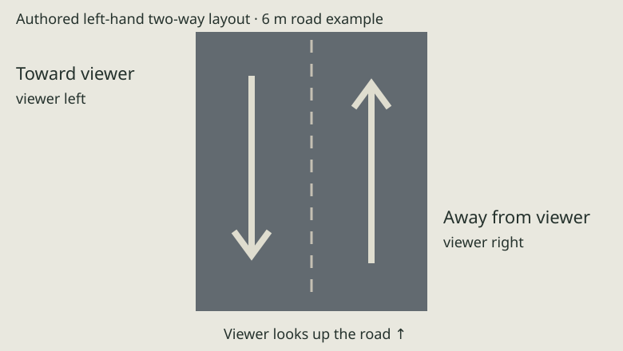

Seasonal street-tree families
4 asset defaults · Full sheet · PNG sheet
Approved Japan r2 lighting and sheet format · smooth forms / plain surfaces
4 asset defaults · Full sheet · PNG sheet

7 asset defaults · Full sheet · PNG sheet

5 asset defaults · Full sheet · PNG sheet

7 asset defaults · Full sheet · PNG sheet

8 asset defaults · Full sheet · PNG sheet

5 asset defaults · Full sheet · PNG sheet

6 asset defaults · Full sheet · PNG sheet

7 asset defaults · Full sheet · PNG sheet

10 asset defaults · Full sheet · PNG sheet
wallToWallWidthM: [4, 6]
nominalM: 5
raisedSidewalk: False
curb: False
publicLawn: False
streetTreesPer100M: [0, 0]
privateGardenTreesPer10EligibleFrontages: [1, 3]
potsPerEligibleRecess: [1, 3]
maxVisiblePotsPer100M: 12
hedgeRunsPer100M: [0, 2]
vendingPer100M: [0, 1]
mailboxesPer100M: [0, 1]
lampsPer100M: [2, 3]
poleSpacingM: [25, 40]
nearPoleCap: 2
nearWireSpanCap: 3
nearWireDetailRangeM: 30
parkedVehiclePer100M: [0, 2]
placement: only confirmed/private bays; zero on-road inferred parking
bendSightlineM: [25, 35]
illustrativeCarriagewayWidthM: [6, 9]
sidewalkWidthM: [1.5, 2.5]
sidewalkRule: only if mapped/observed; never transfer to lane profile
streetTreeSpacingM: [12, 20]
treePlacement: only confirmed planting strip/pit with access and sightline clearance
lampSpacingM: [25, 40]
signals: junctions only
busDensity: route-derived, never decorative density
treeGroupPer1000M2: [2, 4]
plantersPer1000M2: [4, 8]
bikeSpacesPer1000M2: [12, 30]
busBayCountProposal: [1, 4]
placement: named access zones; keep pedestrian/boarding routes clear
paddyMaskFraction01: [0.55, 0.8]
bundWidthM: [0.4, 0.8]
ditchWidthM: [0.3, 0.6]
treesPer100MEdge: [0, 2]
treesPlacement: outside irrigation/field access, actual boundaries win
nearIndividualTreeInstancesPerHa: [150, 300]
status: visible art population, not ecological stems/ha
midRepresentation: 5–12 canopy mass patches per hectare
farRepresentation: landcover-coloured terrain; no individual tree instances

All generated dressing is inferred. Narrow lanes have no public lawn, curb or raised sidewalk; large vehicles and rail remain in suitable observed corridors.